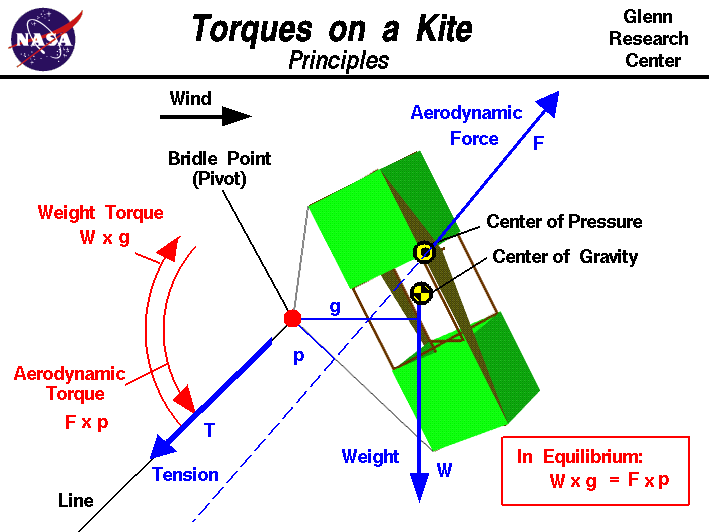

|

Newton's
first law of motion
specifies that when all the external forces on an object are balanced,
there is no net external force and it moves at a constant velocity
or remain at rest (velocity equals zero). This law holds for both linear
motion and forces and for twisting motion and twisting forces. Twisting
forces are called
torques, or moments.
The twisting motion
occurs about some point called the pivot. A torque is related to
a linear force; the torque about a point is equal to the force times
the perpendicular distance to the point. In equilibrium, there are
no net torques about the pivot and the angular velocity is constant
(or zero).
Fundamentals
An excellent way for students to gain a feel for
the action of torques and
forces
is to fly a
kite.
Kites can
fly
because of the forces acting on the
parts
of the kite.
Though kites come in many
shapes
and sizes, the
forces which act on a kite are
the same for all kites.
You can compare the forces to the
forces acting on an airliner in
flight and you will find that, with the exception of thrust, they are
exactly the same.
The similarity in forces allowed the
Wright brothers
to test their theories of flight by flying their
aircraft
as
kites form 1900 to 1902.
There are, however, some important differences in the response of
a kite to external forces that do not occur in an airplane. An airplane
in flight
rotates
about its
center of gravity. The
center of gravity for any object is the
average location of the weight of all the parts of the object.
A kite in flight does not rotate about its
center of gravity because
it is pinned by the bridle to the
control line.
A kite in flight
is more closely related to a hinged door than to an airplane in flight.
The center of gravity of a hinged door is in the center of the^M
door, but the door rotates about the hinges. A kite in flight rotates
about the
bridle point
which is the place where the line is
attached to the
bridle as shown by the red dot on the slide.
There are three main
forces
which act on a kite; the weight, the aerodynamics, and the tension in the
line. Because the bridle point is the pivot about which the kite rotates,
the tension does not contribute to the torques on the system (the distance
is zero). As shown on the figure, the
weight
produces a clockwise torque
TW about the bridle point which is equal to the magnitude of the weight W
times the perpendicular distance g from the bridle point to the center
of gravity.
TW = W * g
The
aerodynamic
force produces a counterclockwise torque TF
about the bridle point which is equal to the magnitude of the aerodynamic
force F times the perpendicular distance p from the
bridle point to the
center of pressure.
TF = F * p
Notice that the distances are measured perpendicular to the forces and not just
directly to the center of pressure and center of gravity.
Also notice that the direction of the force determines the direction of the torque.
Forces and torques are
vector quantities
having a magnitude and a direction. The direction is as important as the
magnitude.
In equilibrium, these torques are balanced and there is no rotation of the
kite about the bridle point. This is called a trimmed flight condition.
W * g = F * p
The Tricky Part
In flight, a kite can rotate about the bridle point. As the kite rotates, the
inclination angle
between the kite and the wind changes. The magnitude
and direction of the aerodynamic force depends on this angle and the
ratio of the
lift and
drag
which depends on the design of the kite.
So as the kite rotates, the aerodynamic force changes and this
changes the aerodynamic torque about the bridle point as discussed above.
If the changing aerodynamic torque balances the weight torque, the kite reaches an
equilibrium
condition and sits at a fixed inclination angle with no
further rotation about the bridle point.
But if the aerodynamic torque does not equal the weight torque, the kite
continues to rotate under the action of the unequal torques. It is possible
that the aerodynamic torque never equals the weight torque which causes the
kite to continually rotate.
In equilibrium the kite is inclined to
the wind (and to the ground) at a fixed angle and the magnitude
of the
lift
force depends directly on this angle. Since the weight of the kite is constant,
the difference between the lift and the weight is an indication of
how well the kite flies.
If the lift is greater, the kite climbs faster, flies higher, and is able
to lift more string. If the lift is less, the kite climbs slowly or maybe not
at all!
Since the flight angle depends on the balance of torques, and the torques
depend on the location
of the bridle point relative to the cg and cp,
the location of the bridle point has a major effect on the performance of the kite.
The location of the bridle point can be changed by the flyer before
launch by moving the knot that holds the line to the bridle.
The mathematical equations involved with the
forces
and
torques
on a kite can be solved
by using a computer program. You can use the
KiteModeler program to further study how kites work
and to design your own kites.
Activities:
Guided Tours
-
 Forces on a Kite
Forces on a Kite

-
KiteModeler
Navigation ..


- Beginner's Guide Home Page
|